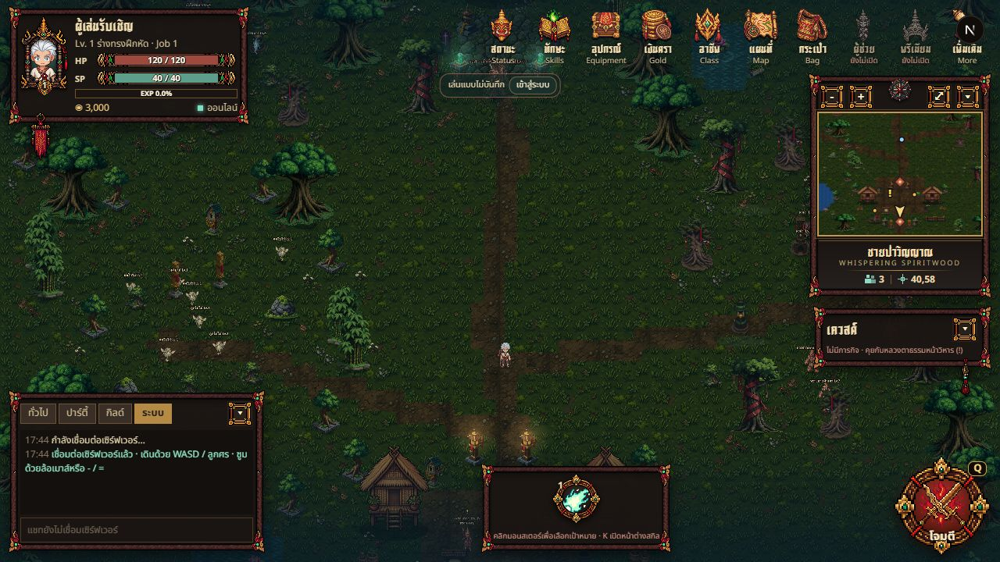
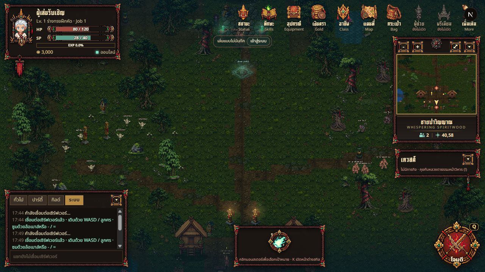

1280×720 · แมพเดียวกัน · กล้อง overview และสเกลเดียวกัน · ตัวละคร/มอนสเตอร์และไฟเป็นสถานะสด คนละเวลาถ่าย


เส้นทางจริง: ชายป่าวิญญาณ ↔ ทุ่งนาประทีป ↔ ป่าชายเลนจันทร์ดับ ↔ บึงฝนลืมวิญญาณ
มอนสเตอร์เดิมทำหน้าที่ชั่วคราวในสามแมพใหม่ ภาพนิ่งชุดใหม่และสมดุลเลเวลยังไม่ใช่งานแอนิเมชันที่เสร็จแล้ว